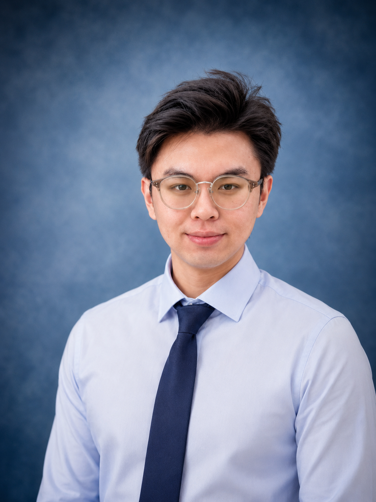

数字孪生工程师/3D 可视化/工业仿真

3 年数字孪生项目经历，机械工程本科背景，具备从工业模型处理、三维场景搭建、产线仿真验证到前端可视化看板开发的复合交付能力。深度参与军工与民用两类数字孪生项目，覆盖精密装配产线仿真、产线级数字孪生、设备级看板及投标演示等多个场景。多次担任现场实施负责人，独立推动从需求对接到验收交付的全流程闭环。
承担产线三维模型轻量化、材质渲染与场景整理。使用 Vue + ECharts 开发前端可视化看板，呈现产线状态、设备信息与关键生产指标。参与现场部署、联调验收与客户沟通，支撑项目顺利交付。
基于三维仿真引擎搭建精密舱段装配验证环境，完成工位动作模拟与干涉检查。同步开发 ECharts 可视化看板呈现装配进度、质量数据与关键指标，配合现场联调保障系统在客户方稳定运行。
独立负责三维模型轻量化与场景精简，完成多工位 PLC 信号地址配置、机器人通讯测试及系统联调，推动模型-信号-界面三者闭环联动，实现从模型到可运行系统的完整交付。
完成设备空间干涉检查、机械手抓料可达性分析与生产节拍量化。基于仿真结果识别产线瓶颈，输出优化建议支撑设备布局调整与工艺方案决策。
参与转子部件等复杂装配场景仿真，围绕装配动作序列、空间干涉与流程合理性进行验证，以仿真结果支撑工艺方案评审与迭代优化。
使用产线仿真软件对特种材料装配产线进行全流程节拍分析，覆盖数十个工位的动作时间量化与物流衔接验证，识别产能瓶颈并提出优化方向。
担任现场实施负责人，主导需求对接与实施进度协调，排查模型渲染与系统配置问题，完成从进场部署到验收交付的全流程现场闭环。
面向多所高校开展需求沟通、产品演示与软件操作培训，配合教学产线完成现场实施，编写培训资料与使用说明。基于 Three.js 构建机构运动数字孪生模拟辅助课堂教学。
机械工程背景 × 数字孪生实施的交叉型工程师。3 年间从模型处理、仿真验证、现场联调到看板开发形成完整交付闭环，多次在客户现场承担实施负责角色。相比单一技术岗位，更擅长将工业现场的真实需求转化为可落地的可视化与仿真方案。情绪稳定，能适应短期出差与现场交付节奏，希望在工业数字化、三维可视化或数字孪生赛道持续深耕。